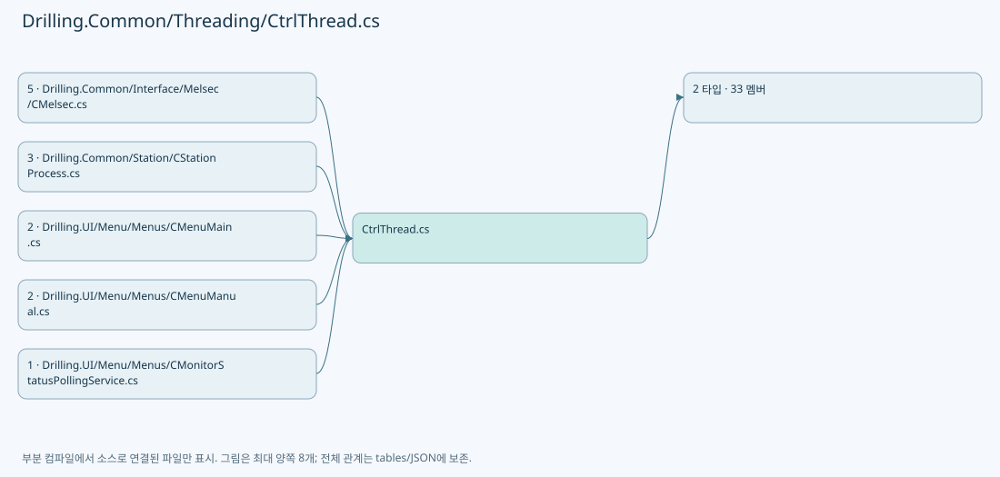

Markdown 원문 · Git 원본
Drilling.Common/Threading/CtrlThread.cs
| 항목 | 내용 |
|---|
| 원본 저장소 | https://github.com/kjuws10-rgb/A3Drilling.git |
| 원본 Commit | 5aee8e58439c9b455cae7c9593c9be986c3e682e |
| 원본 SHA256 | 072b00b00719220875cbf64c016f85320d0262f45f10e5f599a4abb7e673a5a3 |
| 파일 분류 | code |
| 원본 크기/행 | 7,048 bytes / 293 physical lines |
| 인코딩 | utf-8-sig |
| 검토 범위 | 구문/부분 의미 분석에서 추출한 사실. 동작·물리 단위·실장비 합격을 보증하지 않습니다. |
| 원본 링크 | 고정 Commit 원본 |
파일의 역할과 읽는 순서
프로그램의 시작·구성·공유 타입 또는 빌드 연결에 사용됩니다. 아래 실제 선언·참조와 원본 근거를 확인합니다.

네임스페이스·타입·상속
| 타입 | 구분 | 원본 범위 | 선언/상속 |
|---|
| CtrlThread | ClassDeclaration | 4–284 | CtrlThread |
| EN_CTRL_THREAD_STATE | EnumDeclaration | 286–293 | EN_CTRL_THREAD_STATE |
멤버 빠른 목록
| 이름 | 종류 | 범위 | 서명 |
|---|
| _sync | FieldDeclaration | L6–6 | object Drilling.Common.Threading.CtrlThread._sync |
| _pauseEvent | FieldDeclaration | L7–7 | System.Threading.ManualResetEventSlim Drilling.Common.Threading.CtrlThread._pauseEvent |
| _stopEvent | FieldDeclaration | L8–8 | System.Threading.ManualResetEventSlim Drilling.Common.Threading.CtrlThread._stopEvent |
| _thread | FieldDeclaration | L9–9 | System.Threading.Thread? Drilling.Common.Threading.CtrlThread._thread |
| _stopRequested | FieldDeclaration | L10–10 | bool Drilling.Common.Threading.CtrlThread._stopRequested |
| _delayMs | FieldDeclaration | L11–11 | int Drilling.Common.Threading.CtrlThread._delayMs |
| _threadName | FieldDeclaration | L12–12 | string Drilling.Common.Threading.CtrlThread._threadName |
| _state | FieldDeclaration | L13–13 | Drilling.Common.Threading.EN_CTRL_THREAD_STATE Drilling.Common.Threading.CtrlThread._state |
| _lastError | FieldDeclaration | L14–14 | System.Exception? Drilling.Common.Threading.CtrlThread._lastError |
| _disposed | FieldDeclaration | L15–15 | bool Drilling.Common.Threading.CtrlThread._disposed |
| IsRunning | PropertyDeclaration | L16–25 | bool Drilling.Common.Threading.CtrlThread.IsRunning |
| get_IsRunning | GetAccessorDeclaration | L18–24 | bool Drilling.Common.Threading.CtrlThread.IsRunning.get |
| IsPaused | PropertyDeclaration | L27–36 | bool Drilling.Common.Threading.CtrlThread.IsPaused |
| get_IsPaused | GetAccessorDeclaration | L29–35 | bool Drilling.Common.Threading.CtrlThread.IsPaused.get |
| ThreadState | PropertyDeclaration | L38–47 | Drilling.Common.Threading.EN_CTRL_THREAD_STATE Drilling.Common.Threading.CtrlThread.ThreadState |
| get_ThreadState | GetAccessorDeclaration | L40–46 | Drilling.Common.Threading.EN_CTRL_THREAD_STATE Drilling.Common.Threading.CtrlThread.ThreadState.get |
| LastThreadError | PropertyDeclaration | L49–58 | System.Exception? Drilling.Common.Threading.CtrlThread.LastThreadError |
| get_LastThreadError | GetAccessorDeclaration | L51–57 | System.Exception? Drilling.Common.Threading.CtrlThread.LastThreadError.get |
| Start | MethodDeclaration | L60–96 | void Drilling.Common.Threading.CtrlThread.Start(int, string) |
| Pause | MethodDeclaration | L98–111 | void Drilling.Common.Threading.CtrlThread.Pause() |
| Resume | MethodDeclaration | L113–126 | void Drilling.Common.Threading.CtrlThread.Resume() |
| Stop | MethodDeclaration | L128–188 | void Drilling.Common.Threading.CtrlThread.Stop() |
| Dispose | MethodDeclaration | L190–208 | void Drilling.Common.Threading.CtrlThread.Dispose() |
| Run | MethodDeclaration | L210–212 | void Drilling.Common.Threading.CtrlThread.Run() |
| IsStopRequested | MethodDeclaration | L214–217 | bool Drilling.Common.Threading.CtrlThread.IsStopRequested() |
| OnThreadError | MethodDeclaration | L219–222 | void Drilling.Common.Threading.CtrlThread.OnThreadError(System.Exception) |
| ThrowIfDisposed | MethodDeclaration | L224–230 | void Drilling.Common.Threading.CtrlThread.ThrowIfDisposed() |
| ThreadProcess | MethodDeclaration | L232–283 | void Drilling.Common.Threading.CtrlThread.ThreadProcess() |
| Stopped | EnumMemberDeclaration | L288–288 | Drilling.Common.Threading.EN_CTRL_THREAD_STATE.Stopped |
| Running | EnumMemberDeclaration | L289–289 | Drilling.Common.Threading.EN_CTRL_THREAD_STATE.Running |
| Paused | EnumMemberDeclaration | L290–290 | Drilling.Common.Threading.EN_CTRL_THREAD_STATE.Paused |
| Stopping | EnumMemberDeclaration | L291–291 | Drilling.Common.Threading.EN_CTRL_THREAD_STATE.Stopping |
| Error | EnumMemberDeclaration | L292–292 | Drilling.Common.Threading.EN_CTRL_THREAD_STATE.Error |
멤버별 상세 계약·호출·처리 해설
FieldDeclaration _sync · L6–6
Drilling.Common/Threading/CtrlThread.cs:6–6
| 항목 | 실제 추출 값 |
|---|
| 서명 | object Drilling.Common.Threading.CtrlThread._sync |
| 접근/수식자 | Private / private, readonly |
| 반환/값 타입 | object |
| 소속 타입 | NamedType:Drilling.Common.Threading.CtrlThread |
현재 부분 분석에서 직접 연결된 호출자는 없습니다. XAML/이벤트/인터페이스·델리게이트·외부 진입을 추가 확인해야 하며, 미사용으로 판정한 것이 아닙니다.
호출하는 대상과 해석 범위:
| 원본 행 | 표현식 | 분석 상태 | 대상/소스 위치 |
|---|
| 6 | new | resolved | object.Object() |
본문의 실제 연산·분기·예외·반환 순서(원문 위치 순):
| 원본 행 | 종류 | 주석 해설 |
|---|
| 6 | call | 함수·델리게이트 또는 객체 생성자를 호출합니다: new() |
| 6 | variable-initializer | 변수의 초기값을 지정합니다: _sync = new() |
변경 전 점검: 입력/반환 타입, 위 호출자, 예외/취소 경로, 공유 상태와 저장·전송 소비자를 함께 확인합니다. 값의 단위나 물리 방향을 이름만으로 확정하지 않습니다.
FieldDeclaration _pauseEvent · L7–7
Drilling.Common/Threading/CtrlThread.cs:7–7
| 항목 | 실제 추출 값 |
|---|
| 서명 | System.Threading.ManualResetEventSlim Drilling.Common.Threading.CtrlThread._pauseEvent |
| 접근/수식자 | Private / private, readonly |
| 반환/값 타입 | System.Threading.ManualResetEventSlim |
| 소속 타입 | NamedType:Drilling.Common.Threading.CtrlThread |
현재 부분 분석에서 직접 연결된 호출자는 없습니다. XAML/이벤트/인터페이스·델리게이트·외부 진입을 추가 확인해야 하며, 미사용으로 판정한 것이 아닙니다.
호출하는 대상과 해석 범위:
| 원본 행 | 표현식 | 분석 상태 | 대상/소스 위치 |
|---|
| 7 | new | resolved | System.Threading.ManualResetEventSlim.ManualResetEventSlim(bool) |
본문의 실제 연산·분기·예외·반환 순서(원문 위치 순):
| 원본 행 | 종류 | 주석 해설 |
|---|
| 7 | call | 함수·델리게이트 또는 객체 생성자를 호출합니다: new(true) |
| 7 | variable-initializer | 변수의 초기값을 지정합니다: _pauseEvent = new(true) |
변경 전 점검: 입력/반환 타입, 위 호출자, 예외/취소 경로, 공유 상태와 저장·전송 소비자를 함께 확인합니다. 값의 단위나 물리 방향을 이름만으로 확정하지 않습니다.
FieldDeclaration _stopEvent · L8–8
Drilling.Common/Threading/CtrlThread.cs:8–8
| 항목 | 실제 추출 값 |
|---|
| 서명 | System.Threading.ManualResetEventSlim Drilling.Common.Threading.CtrlThread._stopEvent |
| 접근/수식자 | Private / private, readonly |
| 반환/값 타입 | System.Threading.ManualResetEventSlim |
| 소속 타입 | NamedType:Drilling.Common.Threading.CtrlThread |
현재 부분 분석에서 직접 연결된 호출자는 없습니다. XAML/이벤트/인터페이스·델리게이트·외부 진입을 추가 확인해야 하며, 미사용으로 판정한 것이 아닙니다.
호출하는 대상과 해석 범위:
| 원본 행 | 표현식 | 분석 상태 | 대상/소스 위치 |
|---|
| 8 | new | resolved | System.Threading.ManualResetEventSlim.ManualResetEventSlim(bool) |
본문의 실제 연산·분기·예외·반환 순서(원문 위치 순):
| 원본 행 | 종류 | 주석 해설 |
|---|
| 8 | call | 함수·델리게이트 또는 객체 생성자를 호출합니다: new(false) |
| 8 | variable-initializer | 변수의 초기값을 지정합니다: _stopEvent = new(false) |
변경 전 점검: 입력/반환 타입, 위 호출자, 예외/취소 경로, 공유 상태와 저장·전송 소비자를 함께 확인합니다. 값의 단위나 물리 방향을 이름만으로 확정하지 않습니다.
FieldDeclaration _thread · L9–9
Drilling.Common/Threading/CtrlThread.cs:9–9
| 항목 | 실제 추출 값 |
|---|
| 서명 | System.Threading.Thread? Drilling.Common.Threading.CtrlThread._thread |
| 접근/수식자 | Private / private |
| 반환/값 타입 | System.Threading.Thread? |
| 소속 타입 | NamedType:Drilling.Common.Threading.CtrlThread |
현재 부분 분석에서 직접 연결된 호출자는 없습니다. XAML/이벤트/인터페이스·델리게이트·외부 진입을 추가 확인해야 하며, 미사용으로 판정한 것이 아닙니다.
변경 전 점검: 입력/반환 타입, 위 호출자, 예외/취소 경로, 공유 상태와 저장·전송 소비자를 함께 확인합니다. 값의 단위나 물리 방향을 이름만으로 확정하지 않습니다.
FieldDeclaration _stopRequested · L10–10
Drilling.Common/Threading/CtrlThread.cs:10–10
| 항목 | 실제 추출 값 |
|---|
| 서명 | bool Drilling.Common.Threading.CtrlThread._stopRequested |
| 접근/수식자 | Private / private, volatile |
| 반환/값 타입 | bool |
| 소속 타입 | NamedType:Drilling.Common.Threading.CtrlThread |
현재 부분 분석에서 직접 연결된 호출자는 없습니다. XAML/이벤트/인터페이스·델리게이트·외부 진입을 추가 확인해야 하며, 미사용으로 판정한 것이 아닙니다.
변경 전 점검: 입력/반환 타입, 위 호출자, 예외/취소 경로, 공유 상태와 저장·전송 소비자를 함께 확인합니다. 값의 단위나 물리 방향을 이름만으로 확정하지 않습니다.
FieldDeclaration _delayMs · L11–11
Drilling.Common/Threading/CtrlThread.cs:11–11
| 항목 | 실제 추출 값 |
|---|
| 서명 | int Drilling.Common.Threading.CtrlThread._delayMs |
| 접근/수식자 | Private / private |
| 반환/값 타입 | int |
| 소속 타입 | NamedType:Drilling.Common.Threading.CtrlThread |
현재 부분 분석에서 직접 연결된 호출자는 없습니다. XAML/이벤트/인터페이스·델리게이트·외부 진입을 추가 확인해야 하며, 미사용으로 판정한 것이 아닙니다.
본문의 실제 연산·분기·예외·반환 순서(원문 위치 순):
| 원본 행 | 종류 | 주석 해설 |
|---|
| 11 | variable-initializer | 변수의 초기값을 지정합니다: _delayMs = 1 |
변경 전 점검: 입력/반환 타입, 위 호출자, 예외/취소 경로, 공유 상태와 저장·전송 소비자를 함께 확인합니다. 값의 단위나 물리 방향을 이름만으로 확정하지 않습니다.
FieldDeclaration _threadName · L12–12
Drilling.Common/Threading/CtrlThread.cs:12–12
| 항목 | 실제 추출 값 |
|---|
| 서명 | string Drilling.Common.Threading.CtrlThread._threadName |
| 접근/수식자 | Private / private |
| 반환/값 타입 | string |
| 소속 타입 | NamedType:Drilling.Common.Threading.CtrlThread |
현재 부분 분석에서 직접 연결된 호출자는 없습니다. XAML/이벤트/인터페이스·델리게이트·외부 진입을 추가 확인해야 하며, 미사용으로 판정한 것이 아닙니다.
본문의 실제 연산·분기·예외·반환 순서(원문 위치 순):
| 원본 행 | 종류 | 주석 해설 |
|---|
| 12 | variable-initializer | 변수의 초기값을 지정합니다: _threadName = "" |
변경 전 점검: 입력/반환 타입, 위 호출자, 예외/취소 경로, 공유 상태와 저장·전송 소비자를 함께 확인합니다. 값의 단위나 물리 방향을 이름만으로 확정하지 않습니다.
FieldDeclaration _state · L13–13
Drilling.Common/Threading/CtrlThread.cs:13–13
| 항목 | 실제 추출 값 |
|---|
| 서명 | Drilling.Common.Threading.EN_CTRL_THREAD_STATE Drilling.Common.Threading.CtrlThread._state |
| 접근/수식자 | Private / private |
| 반환/값 타입 | Drilling.Common.Threading.EN_CTRL_THREAD_STATE |
| 소속 타입 | NamedType:Drilling.Common.Threading.CtrlThread |
현재 부분 분석에서 직접 연결된 호출자는 없습니다. XAML/이벤트/인터페이스·델리게이트·외부 진입을 추가 확인해야 하며, 미사용으로 판정한 것이 아닙니다.
본문의 실제 연산·분기·예외·반환 순서(원문 위치 순):
| 원본 행 | 종류 | 주석 해설 |
|---|
| 13 | variable-initializer | 변수의 초기값을 지정합니다: _state = EN_CTRL_THREAD_STATE.Stopped |
변경 전 점검: 입력/반환 타입, 위 호출자, 예외/취소 경로, 공유 상태와 저장·전송 소비자를 함께 확인합니다. 값의 단위나 물리 방향을 이름만으로 확정하지 않습니다.
FieldDeclaration _lastError · L14–14
Drilling.Common/Threading/CtrlThread.cs:14–14
| 항목 | 실제 추출 값 |
|---|
| 서명 | System.Exception? Drilling.Common.Threading.CtrlThread._lastError |
| 접근/수식자 | Private / private |
| 반환/값 타입 | System.Exception? |
| 소속 타입 | NamedType:Drilling.Common.Threading.CtrlThread |
현재 부분 분석에서 직접 연결된 호출자는 없습니다. XAML/이벤트/인터페이스·델리게이트·외부 진입을 추가 확인해야 하며, 미사용으로 판정한 것이 아닙니다.
변경 전 점검: 입력/반환 타입, 위 호출자, 예외/취소 경로, 공유 상태와 저장·전송 소비자를 함께 확인합니다. 값의 단위나 물리 방향을 이름만으로 확정하지 않습니다.
FieldDeclaration _disposed · L15–15
Drilling.Common/Threading/CtrlThread.cs:15–15
| 항목 | 실제 추출 값 |
|---|
| 서명 | bool Drilling.Common.Threading.CtrlThread._disposed |
| 접근/수식자 | Private / private |
| 반환/값 타입 | bool |
| 소속 타입 | NamedType:Drilling.Common.Threading.CtrlThread |
현재 부분 분석에서 직접 연결된 호출자는 없습니다. XAML/이벤트/인터페이스·델리게이트·외부 진입을 추가 확인해야 하며, 미사용으로 판정한 것이 아닙니다.
변경 전 점검: 입력/반환 타입, 위 호출자, 예외/취소 경로, 공유 상태와 저장·전송 소비자를 함께 확인합니다. 값의 단위나 물리 방향을 이름만으로 확정하지 않습니다.
PropertyDeclaration IsRunning · L16–25
Drilling.Common/Threading/CtrlThread.cs:16–25
| 항목 | 실제 추출 값 |
|---|
| 서명 | bool Drilling.Common.Threading.CtrlThread.IsRunning |
| 접근/수식자 | Public / public |
| 반환/값 타입 | bool |
| 소속 타입 | NamedType:Drilling.Common.Threading.CtrlThread |
현재 부분 분석에서 직접 연결된 호출자는 없습니다. XAML/이벤트/인터페이스·델리게이트·외부 진입을 추가 확인해야 하며, 미사용으로 판정한 것이 아닙니다.
변경 전 점검: 입력/반환 타입, 위 호출자, 예외/취소 경로, 공유 상태와 저장·전송 소비자를 함께 확인합니다. 값의 단위나 물리 방향을 이름만으로 확정하지 않습니다.
GetAccessorDeclaration get_IsRunning · L18–24
Drilling.Common/Threading/CtrlThread.cs:18–24
| 항목 | 실제 추출 값 |
|---|
| 서명 | bool Drilling.Common.Threading.CtrlThread.IsRunning.get |
| 접근/수식자 | Public / get |
| 반환/값 타입 | bool |
| 소속 타입 | NamedType:Drilling.Common.Threading.CtrlThread |
현재 부분 분석에서 직접 연결된 호출자는 없습니다. XAML/이벤트/인터페이스·델리게이트·외부 진입을 추가 확인해야 하며, 미사용으로 판정한 것이 아닙니다.
본문의 실제 연산·분기·예외·반환 순서(원문 위치 순):
| 원본 행 | 종류 | 주석 해설 |
|---|
| 20 | lock | 공유 상태의 임계 구역에 진입합니다: lock (_sync) |
| 22 | return | 호출자에게 값 또는 제어를 반환합니다: return _thread is { IsAlive: true }; |
제어 구문의 포함 구조(실제 실행 순서/CFG가 아닌 구문 탐색 그림):
flowchart TD
M["get_IsRunning"]
N0["L20 lock"]
M -->|포함| N0
변경 전 점검: 입력/반환 타입, 위 호출자, 예외/취소 경로, 공유 상태와 저장·전송 소비자를 함께 확인합니다. 값의 단위나 물리 방향을 이름만으로 확정하지 않습니다.
PropertyDeclaration IsPaused · L27–36
Drilling.Common/Threading/CtrlThread.cs:27–36
| 항목 | 실제 추출 값 |
|---|
| 서명 | bool Drilling.Common.Threading.CtrlThread.IsPaused |
| 접근/수식자 | Public / public |
| 반환/값 타입 | bool |
| 소속 타입 | NamedType:Drilling.Common.Threading.CtrlThread |
현재 부분 분석에서 직접 연결된 호출자는 없습니다. XAML/이벤트/인터페이스·델리게이트·외부 진입을 추가 확인해야 하며, 미사용으로 판정한 것이 아닙니다.
변경 전 점검: 입력/반환 타입, 위 호출자, 예외/취소 경로, 공유 상태와 저장·전송 소비자를 함께 확인합니다. 값의 단위나 물리 방향을 이름만으로 확정하지 않습니다.
GetAccessorDeclaration get_IsPaused · L29–35
Drilling.Common/Threading/CtrlThread.cs:29–35
| 항목 | 실제 추출 값 |
|---|
| 서명 | bool Drilling.Common.Threading.CtrlThread.IsPaused.get |
| 접근/수식자 | Public / get |
| 반환/값 타입 | bool |
| 소속 타입 | NamedType:Drilling.Common.Threading.CtrlThread |
현재 부분 분석에서 직접 연결된 호출자는 없습니다. XAML/이벤트/인터페이스·델리게이트·외부 진입을 추가 확인해야 하며, 미사용으로 판정한 것이 아닙니다.
본문의 실제 연산·분기·예외·반환 순서(원문 위치 순):
| 원본 행 | 종류 | 주석 해설 |
|---|
| 31 | lock | 공유 상태의 임계 구역에 진입합니다: lock (_sync) |
| 33 | return | 호출자에게 값 또는 제어를 반환합니다: return _state == EN_CTRL_THREAD_STATE.Paused; |
제어 구문의 포함 구조(실제 실행 순서/CFG가 아닌 구문 탐색 그림):
flowchart TD
M["get_IsPaused"]
N0["L31 lock"]
M -->|포함| N0
변경 전 점검: 입력/반환 타입, 위 호출자, 예외/취소 경로, 공유 상태와 저장·전송 소비자를 함께 확인합니다. 값의 단위나 물리 방향을 이름만으로 확정하지 않습니다.
PropertyDeclaration ThreadState · L38–47
Drilling.Common/Threading/CtrlThread.cs:38–47
| 항목 | 실제 추출 값 |
|---|
| 서명 | Drilling.Common.Threading.EN_CTRL_THREAD_STATE Drilling.Common.Threading.CtrlThread.ThreadState |
| 접근/수식자 | Public / public |
| 반환/값 타입 | Drilling.Common.Threading.EN_CTRL_THREAD_STATE |
| 소속 타입 | NamedType:Drilling.Common.Threading.CtrlThread |
현재 부분 분석에서 직접 연결된 호출자는 없습니다. XAML/이벤트/인터페이스·델리게이트·외부 진입을 추가 확인해야 하며, 미사용으로 판정한 것이 아닙니다.
변경 전 점검: 입력/반환 타입, 위 호출자, 예외/취소 경로, 공유 상태와 저장·전송 소비자를 함께 확인합니다. 값의 단위나 물리 방향을 이름만으로 확정하지 않습니다.
GetAccessorDeclaration get_ThreadState · L40–46
Drilling.Common/Threading/CtrlThread.cs:40–46
| 항목 | 실제 추출 값 |
|---|
| 서명 | Drilling.Common.Threading.EN_CTRL_THREAD_STATE Drilling.Common.Threading.CtrlThread.ThreadState.get |
| 접근/수식자 | Public / get |
| 반환/값 타입 | Drilling.Common.Threading.EN_CTRL_THREAD_STATE |
| 소속 타입 | NamedType:Drilling.Common.Threading.CtrlThread |
현재 부분 분석에서 직접 연결된 호출자는 없습니다. XAML/이벤트/인터페이스·델리게이트·외부 진입을 추가 확인해야 하며, 미사용으로 판정한 것이 아닙니다.
본문의 실제 연산·분기·예외·반환 순서(원문 위치 순):
| 원본 행 | 종류 | 주석 해설 |
|---|
| 42 | lock | 공유 상태의 임계 구역에 진입합니다: lock (_sync) |
| 44 | return | 호출자에게 값 또는 제어를 반환합니다: return _state; |
제어 구문의 포함 구조(실제 실행 순서/CFG가 아닌 구문 탐색 그림):
flowchart TD
M["get_ThreadState"]
N0["L42 lock"]
M -->|포함| N0
변경 전 점검: 입력/반환 타입, 위 호출자, 예외/취소 경로, 공유 상태와 저장·전송 소비자를 함께 확인합니다. 값의 단위나 물리 방향을 이름만으로 확정하지 않습니다.
PropertyDeclaration LastThreadError · L49–58
Drilling.Common/Threading/CtrlThread.cs:49–58
| 항목 | 실제 추출 값 |
|---|
| 서명 | System.Exception? Drilling.Common.Threading.CtrlThread.LastThreadError |
| 접근/수식자 | Public / public |
| 반환/값 타입 | System.Exception? |
| 소속 타입 | NamedType:Drilling.Common.Threading.CtrlThread |
현재 부분 분석에서 직접 연결된 호출자는 없습니다. XAML/이벤트/인터페이스·델리게이트·외부 진입을 추가 확인해야 하며, 미사용으로 판정한 것이 아닙니다.
변경 전 점검: 입력/반환 타입, 위 호출자, 예외/취소 경로, 공유 상태와 저장·전송 소비자를 함께 확인합니다. 값의 단위나 물리 방향을 이름만으로 확정하지 않습니다.
GetAccessorDeclaration get_LastThreadError · L51–57
Drilling.Common/Threading/CtrlThread.cs:51–57
| 항목 | 실제 추출 값 |
|---|
| 서명 | System.Exception? Drilling.Common.Threading.CtrlThread.LastThreadError.get |
| 접근/수식자 | Public / get |
| 반환/값 타입 | System.Exception? |
| 소속 타입 | NamedType:Drilling.Common.Threading.CtrlThread |
현재 부분 분석에서 직접 연결된 호출자는 없습니다. XAML/이벤트/인터페이스·델리게이트·외부 진입을 추가 확인해야 하며, 미사용으로 판정한 것이 아닙니다.
본문의 실제 연산·분기·예외·반환 순서(원문 위치 순):
| 원본 행 | 종류 | 주석 해설 |
|---|
| 53 | lock | 공유 상태의 임계 구역에 진입합니다: lock (_sync) |
| 55 | return | 호출자에게 값 또는 제어를 반환합니다: return _lastError; |
제어 구문의 포함 구조(실제 실행 순서/CFG가 아닌 구문 탐색 그림):
flowchart TD
M["get_LastThreadError"]
N0["L53 lock"]
M -->|포함| N0
변경 전 점검: 입력/반환 타입, 위 호출자, 예외/취소 경로, 공유 상태와 저장·전송 소비자를 함께 확인합니다. 값의 단위나 물리 방향을 이름만으로 확정하지 않습니다.
MethodDeclaration Start · L60–96
Drilling.Common/Threading/CtrlThread.cs:60–96
| 항목 | 실제 추출 값 |
|---|
| 서명 | void Drilling.Common.Threading.CtrlThread.Start(int, string) |
| 접근/수식자 | Public / public |
| 반환/값 타입 | void |
| 소속 타입 | NamedType:Drilling.Common.Threading.CtrlThread |
입력 계약:
| 이름 | 타입 | 전달 | 선택/기본값 |
|---|
| delayMs | int | None | False / |
| name | string | None | False / |
정적 호출자로 확인된 위치:
호출하는 대상과 해석 범위:
| 원본 행 | 표현식 | 분석 상태 | 대상/소스 위치 |
|---|
| 64 | ThrowIfDisposed | resolved | void Drilling.Common.Threading.CtrlThread.ThrowIfDisposed() · Drilling.Common/Threading/CtrlThread.cs:224 |
| 70 | Math.Max | resolved | int System.Math.Max(int, int) |
| 71 | string.IsNullOrWhiteSpace | resolved | bool string.IsNullOrWhiteSpace(string?) |
| 71 | GetType | resolved | System.Type object.GetType() |
| 74 | _stopEvent.Reset | resolved | void System.Threading.ManualResetEventSlim.Reset() |
| 75 | _pauseEvent.Set | resolved | void System.Threading.ManualResetEventSlim.Set() |
| 77 | new Thread | resolved | System.Threading.Thread.Thread(System.Threading.ThreadStart) |
| 84 | _thread.Start | resolved | void System.Threading.Thread.Start() |
| 92 | Debug.WriteLine | resolved | void System.Diagnostics.Debug.WriteLine(string?) |
본문의 실제 연산·분기·예외·반환 순서(원문 위치 순):
| 원본 행 | 종류 | 주석 해설 |
|---|
| 62 | lock | 공유 상태의 임계 구역에 진입합니다: lock (_sync) |
| 64 | call | 함수·델리게이트 또는 객체 생성자를 호출합니다: ThrowIfDisposed() |
| 65 | if | 조건에 따라 분기합니다: if (_thread is { IsAlive: true }) |
| 67 | return | 호출자에게 값 또는 제어를 반환합니다: return; |
| 70 | assignment | 값을 대상에 대입합니다: _delayMs = Math.Max(1, delayMs) |
| 70 | call | 함수·델리게이트 또는 객체 생성자를 호출합니다: Math.Max(1, delayMs) |
| 71 | assignment | 값을 대상에 대입합니다: _threadName = string.IsNullOrWhiteSpace(name) ? GetType().Name : name |
| 71 | call | 함수·델리게이트 또는 객체 생성자를 호출합니다: string.IsNullOrWhiteSpace(name) |
| 71 | call | 함수·델리게이트 또는 객체 생성자를 호출합니다: GetType() |
| 71 | conditional-expression | 조건에 따라 결과식을 선택합니다: string.IsNullOrWhiteSpace(name) ? GetType().Name : name |
| 72 | assignment | 값을 대상에 대입합니다: _stopRequested = false |
| 73 | assignment | 값을 대상에 대입합니다: _lastError = null |
| 74 | call | 함수·델리게이트 또는 객체 생성자를 호출합니다: _stopEvent.Reset() |
| 75 | call | 함수·델리게이트 또는 객체 생성자를 호출합니다: _pauseEvent.Set() |
| 76 | assignment | 값을 대상에 대입합니다: _state = EN_CTRL_THREAD_STATE.Running |
| 77 | assignment | 값을 대상에 대입합니다: _thread = new Thread(ThreadProcess) { IsBackground = true, Name = _threadName } |
| 77 | call | 함수·델리게이트 또는 객체 생성자를 호출합니다: new Thread(ThreadProcess) { IsBackground = true, Name = _threadName } |
| 79 | assignment | 값을 대상에 대입합니다: IsBackground = true |
| 80 | assignment | 값을 대상에 대입합니다: Name = _threadName |
| 82 | try | 예외 처리 범위입니다: try |
| 84 | call | 함수·델리게이트 또는 객체 생성자를 호출합니다: _thread.Start() |
| 86 | catch | 지정 예외를 처리합니다: catch (Exception exception) |
| 88 | assignment | 값을 대상에 대입합니다: _thread = null |
| 89 | assignment | 값을 대상에 대입합니다: _state = EN_CTRL_THREAD_STATE.Error |
| 90 | assignment | 값을 대상에 대입합니다: _lastError = exception |
| 91 | assignment | 값을 대상에 대입합니다: _stopRequested = true |
| 92 | call | 함수·델리게이트 또는 객체 생성자를 호출합니다: Debug.WriteLine("Thread start failed : " + _threadName + " / " + exception) |
| 93 | throw | 예외를 발생/전달합니다: throw; |
제어 구문의 포함 구조(실제 실행 순서/CFG가 아닌 구문 탐색 그림):
flowchart TD
M["Start"]
N0["L62 lock"]
M -->|포함| N0
N1["L65 if"]
N0 -->|포함| N1
N2["L82 try"]
N0 -->|포함| N2
N3["L86 catch"]
N2 -->|포함| N3
변경 전 점검: 입력/반환 타입, 위 호출자, 예외/취소 경로, 공유 상태와 저장·전송 소비자를 함께 확인합니다. 값의 단위나 물리 방향을 이름만으로 확정하지 않습니다.
MethodDeclaration Pause · L98–111
Drilling.Common/Threading/CtrlThread.cs:98–111
| 항목 | 실제 추출 값 |
|---|
| 서명 | void Drilling.Common.Threading.CtrlThread.Pause() |
| 접근/수식자 | Public / public |
| 반환/값 타입 | void |
| 소속 타입 | NamedType:Drilling.Common.Threading.CtrlThread |
현재 부분 분석에서 직접 연결된 호출자는 없습니다. XAML/이벤트/인터페이스·델리게이트·외부 진입을 추가 확인해야 하며, 미사용으로 판정한 것이 아닙니다.
호출하는 대상과 해석 범위:
| 원본 행 | 표현식 | 분석 상태 | 대상/소스 위치 |
|---|
| 102 | ThrowIfDisposed | resolved | void Drilling.Common.Threading.CtrlThread.ThrowIfDisposed() · Drilling.Common/Threading/CtrlThread.cs:224 |
| 108 | _pauseEvent.Reset | resolved | void System.Threading.ManualResetEventSlim.Reset() |
본문의 실제 연산·분기·예외·반환 순서(원문 위치 순):
| 원본 행 | 종류 | 주석 해설 |
|---|
| 100 | lock | 공유 상태의 임계 구역에 진입합니다: lock (_sync) |
| 102 | call | 함수·델리게이트 또는 객체 생성자를 호출합니다: ThrowIfDisposed() |
| 103 | if | 조건에 따라 분기합니다: if (_thread is not { IsAlive: true } || _stopRequested) |
| 105 | return | 호출자에게 값 또는 제어를 반환합니다: return; |
| 108 | call | 함수·델리게이트 또는 객체 생성자를 호출합니다: _pauseEvent.Reset() |
| 109 | assignment | 값을 대상에 대입합니다: _state = EN_CTRL_THREAD_STATE.Paused |
제어 구문의 포함 구조(실제 실행 순서/CFG가 아닌 구문 탐색 그림):
flowchart TD
M["Pause"]
N0["L100 lock"]
M -->|포함| N0
N1["L103 if"]
N0 -->|포함| N1
변경 전 점검: 입력/반환 타입, 위 호출자, 예외/취소 경로, 공유 상태와 저장·전송 소비자를 함께 확인합니다. 값의 단위나 물리 방향을 이름만으로 확정하지 않습니다.
MethodDeclaration Resume · L113–126
Drilling.Common/Threading/CtrlThread.cs:113–126
| 항목 | 실제 추출 값 |
|---|
| 서명 | void Drilling.Common.Threading.CtrlThread.Resume() |
| 접근/수식자 | Public / public |
| 반환/값 타입 | void |
| 소속 타입 | NamedType:Drilling.Common.Threading.CtrlThread |
현재 부분 분석에서 직접 연결된 호출자는 없습니다. XAML/이벤트/인터페이스·델리게이트·외부 진입을 추가 확인해야 하며, 미사용으로 판정한 것이 아닙니다.
호출하는 대상과 해석 범위:
| 원본 행 | 표현식 | 분석 상태 | 대상/소스 위치 |
|---|
| 117 | ThrowIfDisposed | resolved | void Drilling.Common.Threading.CtrlThread.ThrowIfDisposed() · Drilling.Common/Threading/CtrlThread.cs:224 |
| 124 | _pauseEvent.Set | resolved | void System.Threading.ManualResetEventSlim.Set() |
본문의 실제 연산·분기·예외·반환 순서(원문 위치 순):
| 원본 행 | 종류 | 주석 해설 |
|---|
| 115 | lock | 공유 상태의 임계 구역에 진입합니다: lock (_sync) |
| 117 | call | 함수·델리게이트 또는 객체 생성자를 호출합니다: ThrowIfDisposed() |
| 118 | if | 조건에 따라 분기합니다: if (_thread is not { IsAlive: true } || _stopRequested) |
| 120 | return | 호출자에게 값 또는 제어를 반환합니다: return; |
| 123 | assignment | 값을 대상에 대입합니다: _state = EN_CTRL_THREAD_STATE.Running |
| 124 | call | 함수·델리게이트 또는 객체 생성자를 호출합니다: _pauseEvent.Set() |
제어 구문의 포함 구조(실제 실행 순서/CFG가 아닌 구문 탐색 그림):
flowchart TD
M["Resume"]
N0["L115 lock"]
M -->|포함| N0
N1["L118 if"]
N0 -->|포함| N1
변경 전 점검: 입력/반환 타입, 위 호출자, 예외/취소 경로, 공유 상태와 저장·전송 소비자를 함께 확인합니다. 값의 단위나 물리 방향을 이름만으로 확정하지 않습니다.
MethodDeclaration Stop · L128–188
Drilling.Common/Threading/CtrlThread.cs:128–188
| 항목 | 실제 추출 값 |
|---|
| 서명 | void Drilling.Common.Threading.CtrlThread.Stop() |
| 접근/수식자 | Public / public |
| 반환/값 타입 | void |
| 소속 타입 | NamedType:Drilling.Common.Threading.CtrlThread |
정적 호출자로 확인된 위치:
호출하는 대상과 해석 범위:
| 원본 행 | 표현식 | 분석 상태 | 대상/소스 위치 |
|---|
| 134 | ThrowIfDisposed | resolved | void Drilling.Common.Threading.CtrlThread.ThrowIfDisposed() · Drilling.Common/Threading/CtrlThread.cs:224 |
| 137 | _pauseEvent.Set | resolved | void System.Threading.ManualResetEventSlim.Set() |
| 138 | _stopEvent.Set | resolved | void System.Threading.ManualResetEventSlim.Set() |
| 161 | target.Join | resolved | bool System.Threading.Thread.Join(int) |
| 165 | ReferenceEquals | resolved | bool object.ReferenceEquals(object?, object?) |
| 178 | new TimeoutException | resolved | System.TimeoutException.TimeoutException(string?) |
| 180 | Debug.WriteLine | resolved | void System.Diagnostics.Debug.WriteLine(string?) |
| 180 | stopError.ToString | resolved · 동적 구현 선택 가능 | string System.Exception.ToString() |
본문의 실제 연산·분기·예외·반환 순서(원문 위치 순):
| 원본 행 | 종류 | 주석 해설 |
|---|
| 130 | local-declaration | 지역 변수를 선언합니다: Thread? target; |
| 131 | local-declaration | 지역 변수를 선언합니다: bool isCurrentThread; |
| 132 | lock | 공유 상태의 임계 구역에 진입합니다: lock (_sync) |
| 134 | call | 함수·델리게이트 또는 객체 생성자를 호출합니다: ThrowIfDisposed() |
| 135 | assignment | 값을 대상에 대입합니다: _stopRequested = true |
| 136 | assignment | 값을 대상에 대입합니다: _state = EN_CTRL_THREAD_STATE.Stopping |
| 137 | call | 함수·델리게이트 또는 객체 생성자를 호출합니다: _pauseEvent.Set() |
| 138 | call | 함수·델리게이트 또는 객체 생성자를 호출합니다: _stopEvent.Set() |
| 139 | assignment | 값을 대상에 대입합니다: target = _thread |
| 140 | assignment | 값을 대상에 대입합니다: isCurrentThread = target == Thread.CurrentThread |
| 143 | if | 조건에 따라 분기합니다: if (target is null) |
| 145 | lock | 공유 상태의 임계 구역에 진입합니다: lock (_sync) |
| 147 | if | 조건에 따라 분기합니다: if (_thread is null) |
| 149 | assignment | 값을 대상에 대입합니다: _state = EN_CTRL_THREAD_STATE.Stopped |
| 153 | return | 호출자에게 값 또는 제어를 반환합니다: return; |
| 156 | if | 조건에 따라 분기합니다: if (isCurrentThread) |
| 158 | return | 호출자에게 값 또는 제어를 반환합니다: return; |
| 161 | call | 함수·델리게이트 또는 객체 생성자를 호출합니다: target.Join(3000) |
| 161 | local-declaration | 지역 변수를 선언합니다: var stopped = target.Join(3000); |
| 161 | variable-initializer | 변수의 초기값을 지정합니다: stopped = target.Join(3000) |
| 162 | local-declaration | 지역 변수를 선언합니다: Exception? stopError = null; |
| 162 | variable-initializer | 변수의 초기값을 지정합니다: stopError = null |
| 163 | lock | 공유 상태의 임계 구역에 진입합니다: lock (_sync) |
| 165 | call | 함수·델리게이트 또는 객체 생성자를 호출합니다: ReferenceEquals(_thread, target) |
| 165 | if | 조건에 따라 분기합니다: if (!ReferenceEquals(_thread, target)) |
| 167 | return | 호출자에게 값 또는 제어를 반환합니다: return; |
| 170 | if | 조건에 따라 분기합니다: if (stopped || !target.IsAlive) |
| 172 | assignment | 값을 대상에 대입합니다: _thread = null |
| 173 | assignment | 값을 대상에 대입합니다: _state = EN_CTRL_THREAD_STATE.Stopped |
| 175 | else | 앞 조건이 거짓인 경로입니다: else |
| 177 | assignment | 값을 대상에 대입합니다: _state = EN_CTRL_THREAD_STATE.Error |
| 178 | assignment | 값을 대상에 대입합니다: stopError = new TimeoutException("Thread stop timeout: " + _threadName) |
| 178 | call | 함수·델리게이트 또는 객체 생성자를 호출합니다: new TimeoutException("Thread stop timeout: " + _threadName) |
| 179 | assignment | 값을 대상에 대입합니다: _lastError = stopError |
| 180 | call | 함수·델리게이트 또는 객체 생성자를 호출합니다: Debug.WriteLine(stopError.ToString()) |
| 180 | call | 함수·델리게이트 또는 객체 생성자를 호출합니다: stopError.ToString() |
| 184 | if | 조건에 따라 분기합니다: if (stopError is not null) |
| 186 | throw | 예외를 발생/전달합니다: throw stopError; |
제어 구문의 포함 구조(실제 실행 순서/CFG가 아닌 구문 탐색 그림):
flowchart TD
M["Stop"]
N0["L132 lock"]
M -->|포함| N0
N1["L143 if"]
M -->|포함| N1
N2["L145 lock"]
N1 -->|포함| N2
N3["L147 if"]
N2 -->|포함| N3
N4["L156 if"]
M -->|포함| N4
N5["L163 lock"]
M -->|포함| N5
N6["L165 if"]
N5 -->|포함| N6
N7["L170 if"]
N5 -->|포함| N7
N8["L175 else"]
N7 -->|포함| N8
N9["L184 if"]
M -->|포함| N9
변경 전 점검: 입력/반환 타입, 위 호출자, 예외/취소 경로, 공유 상태와 저장·전송 소비자를 함께 확인합니다. 값의 단위나 물리 방향을 이름만으로 확정하지 않습니다.
MethodDeclaration Dispose · L190–208
Drilling.Common/Threading/CtrlThread.cs:190–208
| 항목 | 실제 추출 값 |
|---|
| 서명 | void Drilling.Common.Threading.CtrlThread.Dispose() |
| 접근/수식자 | Public / public |
| 반환/값 타입 | void |
| 소속 타입 | NamedType:Drilling.Common.Threading.CtrlThread |
정적 호출자로 확인된 위치:
호출하는 대상과 해석 범위:
| 원본 행 | 표현식 | 분석 상태 | 대상/소스 위치 |
|---|
| 201 | new InvalidOperationException | resolved | System.InvalidOperationException.InvalidOperationException(string?) |
| 204 | _pauseEvent.Dispose | resolved | void System.Threading.ManualResetEventSlim.Dispose() |
| 205 | _stopEvent.Dispose | resolved | void System.Threading.ManualResetEventSlim.Dispose() |
본문의 실제 연산·분기·예외·반환 순서(원문 위치 순):
| 원본 행 | 종류 | 주석 해설 |
|---|
| 192 | lock | 공유 상태의 임계 구역에 진입합니다: lock (_sync) |
| 194 | if | 조건에 따라 분기합니다: if (_disposed) |
| 196 | return | 호출자에게 값 또는 제어를 반환합니다: return; |
| 199 | if | 조건에 따라 분기합니다: if (_thread is { IsAlive: true }) |
| 201 | call | 함수·델리게이트 또는 객체 생성자를 호출합니다: new InvalidOperationException("CtrlThread cannot be disposed while the worker thread is running.") |
| 201 | throw | 예외를 발생/전달합니다: throw new InvalidOperationException("CtrlThread cannot be disposed while the worker thread is running."); |
| 204 | call | 함수·델리게이트 또는 객체 생성자를 호출합니다: _pauseEvent.Dispose() |
| 205 | call | 함수·델리게이트 또는 객체 생성자를 호출합니다: _stopEvent.Dispose() |
| 206 | assignment | 값을 대상에 대입합니다: _disposed = true |
제어 구문의 포함 구조(실제 실행 순서/CFG가 아닌 구문 탐색 그림):
flowchart TD
M["Dispose"]
N0["L192 lock"]
M -->|포함| N0
N1["L194 if"]
N0 -->|포함| N1
N2["L199 if"]
N0 -->|포함| N2
변경 전 점검: 입력/반환 타입, 위 호출자, 예외/취소 경로, 공유 상태와 저장·전송 소비자를 함께 확인합니다. 값의 단위나 물리 방향을 이름만으로 확정하지 않습니다.
MethodDeclaration Run · L210–212
Drilling.Common/Threading/CtrlThread.cs:210–212
| 항목 | 실제 추출 값 |
|---|
| 서명 | void Drilling.Common.Threading.CtrlThread.Run() |
| 접근/수식자 | Public / public, virtual |
| 반환/값 타입 | void |
| 소속 타입 | NamedType:Drilling.Common.Threading.CtrlThread |
정적 호출자로 확인된 위치:
변경 전 점검: 입력/반환 타입, 위 호출자, 예외/취소 경로, 공유 상태와 저장·전송 소비자를 함께 확인합니다. 값의 단위나 물리 방향을 이름만으로 확정하지 않습니다.
MethodDeclaration IsStopRequested · L214–217
Drilling.Common/Threading/CtrlThread.cs:214–217
| 항목 | 실제 추출 값 |
|---|
| 서명 | bool Drilling.Common.Threading.CtrlThread.IsStopRequested() |
| 접근/수식자 | Protected / protected |
| 반환/값 타입 | bool |
| 소속 타입 | NamedType:Drilling.Common.Threading.CtrlThread |
현재 부분 분석에서 직접 연결된 호출자는 없습니다. XAML/이벤트/인터페이스·델리게이트·외부 진입을 추가 확인해야 하며, 미사용으로 판정한 것이 아닙니다.
본문의 실제 연산·분기·예외·반환 순서(원문 위치 순):
| 원본 행 | 종류 | 주석 해설 |
|---|
| 216 | return | 호출자에게 값 또는 제어를 반환합니다: return _stopRequested; |
변경 전 점검: 입력/반환 타입, 위 호출자, 예외/취소 경로, 공유 상태와 저장·전송 소비자를 함께 확인합니다. 값의 단위나 물리 방향을 이름만으로 확정하지 않습니다.
MethodDeclaration OnThreadError · L219–222
Drilling.Common/Threading/CtrlThread.cs:219–222
| 항목 | 실제 추출 값 |
|---|
| 서명 | void Drilling.Common.Threading.CtrlThread.OnThreadError(System.Exception) |
| 접근/수식자 | Protected / protected, virtual |
| 반환/값 타입 | void |
| 소속 타입 | NamedType:Drilling.Common.Threading.CtrlThread |
입력 계약:
| 이름 | 타입 | 전달 | 선택/기본값 |
|---|
| exception | System.Exception | None | False / |
정적 호출자로 확인된 위치:
호출하는 대상과 해석 범위:
| 원본 행 | 표현식 | 분석 상태 | 대상/소스 위치 |
|---|
| 221 | Debug.WriteLine | resolved | void System.Diagnostics.Debug.WriteLine(string?) |
본문의 실제 연산·분기·예외·반환 순서(원문 위치 순):
| 원본 행 | 종류 | 주석 해설 |
|---|
| 221 | call | 함수·델리게이트 또는 객체 생성자를 호출합니다: Debug.WriteLine("Thread Error : " + _threadName + " / " + exception) |
변경 전 점검: 입력/반환 타입, 위 호출자, 예외/취소 경로, 공유 상태와 저장·전송 소비자를 함께 확인합니다. 값의 단위나 물리 방향을 이름만으로 확정하지 않습니다.
MethodDeclaration ThrowIfDisposed · L224–230
Drilling.Common/Threading/CtrlThread.cs:224–230
| 항목 | 실제 추출 값 |
|---|
| 서명 | void Drilling.Common.Threading.CtrlThread.ThrowIfDisposed() |
| 접근/수식자 | Private / private |
| 반환/값 타입 | void |
| 소속 타입 | NamedType:Drilling.Common.Threading.CtrlThread |
정적 호출자로 확인된 위치:
호출하는 대상과 해석 범위:
| 원본 행 | 표현식 | 분석 상태 | 대상/소스 위치 |
|---|
| 228 | new ObjectDisposedException | resolved | System.ObjectDisposedException.ObjectDisposedException(string?) |
| 228 | GetType | resolved | System.Type object.GetType() |
본문의 실제 연산·분기·예외·반환 순서(원문 위치 순):
| 원본 행 | 종류 | 주석 해설 |
|---|
| 226 | if | 조건에 따라 분기합니다: if (_disposed) |
| 228 | call | 함수·델리게이트 또는 객체 생성자를 호출합니다: new ObjectDisposedException(GetType().Name) |
| 228 | call | 함수·델리게이트 또는 객체 생성자를 호출합니다: GetType() |
| 228 | throw | 예외를 발생/전달합니다: throw new ObjectDisposedException(GetType().Name); |
제어 구문의 포함 구조(실제 실행 순서/CFG가 아닌 구문 탐색 그림):
flowchart TD
M["ThrowIfDisposed"]
N0["L226 if"]
M -->|포함| N0
변경 전 점검: 입력/반환 타입, 위 호출자, 예외/취소 경로, 공유 상태와 저장·전송 소비자를 함께 확인합니다. 값의 단위나 물리 방향을 이름만으로 확정하지 않습니다.
MethodDeclaration ThreadProcess · L232–283
Drilling.Common/Threading/CtrlThread.cs:232–283
| 항목 | 실제 추출 값 |
|---|
| 서명 | void Drilling.Common.Threading.CtrlThread.ThreadProcess() |
| 접근/수식자 | Private / private |
| 반환/값 타입 | void |
| 소속 타입 | NamedType:Drilling.Common.Threading.CtrlThread |
현재 부분 분석에서 직접 연결된 호출자는 없습니다. XAML/이벤트/인터페이스·델리게이트·외부 진입을 추가 확인해야 하며, 미사용으로 판정한 것이 아닙니다.
호출하는 대상과 해석 범위:
| 원본 행 | 표현식 | 분석 상태 | 대상/소스 위치 |
|---|
| 238 | _pauseEvent.Wait | resolved | void System.Threading.ManualResetEventSlim.Wait() |
| 246 | Run | resolved · 동적 구현 선택 가능 | void Drilling.Common.Threading.CtrlThread.Run() · Drilling.Common/Threading/CtrlThread.cs:210 |
| 257 | OnThreadError | resolved · 동적 구현 선택 가능 | void Drilling.Common.Threading.CtrlThread.OnThreadError(System.Exception) · Drilling.Common/Threading/CtrlThread.cs:219 |
| 261 | Debug.WriteLine | resolved | void System.Diagnostics.Debug.WriteLine(string?) |
| 265 | _stopEvent.Wait | resolved | bool System.Threading.ManualResetEventSlim.Wait(int) |
본문의 실제 연산·분기·예외·반환 순서(원문 위치 순):
| 원본 행 | 종류 | 주석 해설 |
|---|
| 234 | try | 예외 처리 범위입니다: try |
| 236 | while | 조건을 먼저 확인하며 반복합니다: while (!_stopRequested) |
| 238 | call | 함수·델리게이트 또는 객체 생성자를 호출합니다: _pauseEvent.Wait() |
| 239 | if | 조건에 따라 분기합니다: if (_stopRequested) |
| 241 | break | 해당 반복/분기 구간을 종료합니다: break; |
| 244 | try | 예외 처리 범위입니다: try |
| 246 | call | 함수·델리게이트 또는 객체 생성자를 호출합니다: Run() |
| 248 | catch | 지정 예외를 처리합니다: catch (Exception exception) |
| 250 | lock | 공유 상태의 임계 구역에 진입합니다: lock (_sync) |
| 252 | assignment | 값을 대상에 대입합니다: _lastError = exception |
| 255 | try | 예외 처리 범위입니다: try |
| 257 | call | 함수·델리게이트 또는 객체 생성자를 호출합니다: OnThreadError(exception) |
| 259 | catch | 지정 예외를 처리합니다: catch (Exception callbackException) |
| 261 | call | 함수·델리게이트 또는 객체 생성자를 호출합니다: Debug.WriteLine("Thread error callback failed : " + _threadName + " / " + callbackException) |
| 265 | call | 함수·델리게이트 또는 객체 생성자를 호출합니다: _stopEvent.Wait(_delayMs) |
| 265 | if | 조건에 따라 분기합니다: if (_delayMs > 0 && _stopEvent.Wait(_delayMs)) |
| 267 | break | 해당 반복/분기 구간을 종료합니다: break; |
| 271 | finally | 종료 정리 구간입니다: finally |
| 273 | lock | 공유 상태의 임계 구역에 진입합니다: lock (_sync) |
| 275 | if | 조건에 따라 분기합니다: if (_thread == Thread.CurrentThread) |
| 277 | assignment | 값을 대상에 대입합니다: _thread = null |
| 280 | assignment | 값을 대상에 대입합니다: _state = EN_CTRL_THREAD_STATE.Stopped |
제어 구문의 포함 구조(실제 실행 순서/CFG가 아닌 구문 탐색 그림):
flowchart TD
M["ThreadProcess"]
N0["L234 try"]
M -->|포함| N0
N1["L236 while"]
N0 -->|포함| N1
N2["L239 if"]
N1 -->|포함| N2
N3["L244 try"]
N1 -->|포함| N3
N4["L248 catch"]
N3 -->|포함| N4
N5["L250 lock"]
N4 -->|포함| N5
N6["L255 try"]
N4 -->|포함| N6
N7["L259 catch"]
N6 -->|포함| N7
N8["L265 if"]
N1 -->|포함| N8
N9["L271 finally"]
N0 -->|포함| N9
N10["L273 lock"]
N9 -->|포함| N10
N11["L275 if"]
N10 -->|포함| N11
변경 전 점검: 입력/반환 타입, 위 호출자, 예외/취소 경로, 공유 상태와 저장·전송 소비자를 함께 확인합니다. 값의 단위나 물리 방향을 이름만으로 확정하지 않습니다.
EnumMemberDeclaration Stopped · L288–288
Drilling.Common/Threading/CtrlThread.cs:288–288
| 항목 | 실제 추출 값 |
|---|
| 서명 | Drilling.Common.Threading.EN_CTRL_THREAD_STATE.Stopped |
| 접근/수식자 | Public / |
| 반환/값 타입 | Drilling.Common.Threading.EN_CTRL_THREAD_STATE |
| 소속 타입 | NamedType:Drilling.Common.Threading.EN_CTRL_THREAD_STATE |
현재 부분 분석에서 직접 연결된 호출자는 없습니다. XAML/이벤트/인터페이스·델리게이트·외부 진입을 추가 확인해야 하며, 미사용으로 판정한 것이 아닙니다.
변경 전 점검: 입력/반환 타입, 위 호출자, 예외/취소 경로, 공유 상태와 저장·전송 소비자를 함께 확인합니다. 값의 단위나 물리 방향을 이름만으로 확정하지 않습니다.
EnumMemberDeclaration Running · L289–289
Drilling.Common/Threading/CtrlThread.cs:289–289
| 항목 | 실제 추출 값 |
|---|
| 서명 | Drilling.Common.Threading.EN_CTRL_THREAD_STATE.Running |
| 접근/수식자 | Public / |
| 반환/값 타입 | Drilling.Common.Threading.EN_CTRL_THREAD_STATE |
| 소속 타입 | NamedType:Drilling.Common.Threading.EN_CTRL_THREAD_STATE |
현재 부분 분석에서 직접 연결된 호출자는 없습니다. XAML/이벤트/인터페이스·델리게이트·외부 진입을 추가 확인해야 하며, 미사용으로 판정한 것이 아닙니다.
변경 전 점검: 입력/반환 타입, 위 호출자, 예외/취소 경로, 공유 상태와 저장·전송 소비자를 함께 확인합니다. 값의 단위나 물리 방향을 이름만으로 확정하지 않습니다.
EnumMemberDeclaration Paused · L290–290
Drilling.Common/Threading/CtrlThread.cs:290–290
| 항목 | 실제 추출 값 |
|---|
| 서명 | Drilling.Common.Threading.EN_CTRL_THREAD_STATE.Paused |
| 접근/수식자 | Public / |
| 반환/값 타입 | Drilling.Common.Threading.EN_CTRL_THREAD_STATE |
| 소속 타입 | NamedType:Drilling.Common.Threading.EN_CTRL_THREAD_STATE |
현재 부분 분석에서 직접 연결된 호출자는 없습니다. XAML/이벤트/인터페이스·델리게이트·외부 진입을 추가 확인해야 하며, 미사용으로 판정한 것이 아닙니다.
변경 전 점검: 입력/반환 타입, 위 호출자, 예외/취소 경로, 공유 상태와 저장·전송 소비자를 함께 확인합니다. 값의 단위나 물리 방향을 이름만으로 확정하지 않습니다.
EnumMemberDeclaration Stopping · L291–291
Drilling.Common/Threading/CtrlThread.cs:291–291
| 항목 | 실제 추출 값 |
|---|
| 서명 | Drilling.Common.Threading.EN_CTRL_THREAD_STATE.Stopping |
| 접근/수식자 | Public / |
| 반환/값 타입 | Drilling.Common.Threading.EN_CTRL_THREAD_STATE |
| 소속 타입 | NamedType:Drilling.Common.Threading.EN_CTRL_THREAD_STATE |
현재 부분 분석에서 직접 연결된 호출자는 없습니다. XAML/이벤트/인터페이스·델리게이트·외부 진입을 추가 확인해야 하며, 미사용으로 판정한 것이 아닙니다.
변경 전 점검: 입력/반환 타입, 위 호출자, 예외/취소 경로, 공유 상태와 저장·전송 소비자를 함께 확인합니다. 값의 단위나 물리 방향을 이름만으로 확정하지 않습니다.
EnumMemberDeclaration Error · L292–292
Drilling.Common/Threading/CtrlThread.cs:292–292
| 항목 | 실제 추출 값 |
|---|
| 서명 | Drilling.Common.Threading.EN_CTRL_THREAD_STATE.Error |
| 접근/수식자 | Public / |
| 반환/값 타입 | Drilling.Common.Threading.EN_CTRL_THREAD_STATE |
| 소속 타입 | NamedType:Drilling.Common.Threading.EN_CTRL_THREAD_STATE |
현재 부분 분석에서 직접 연결된 호출자는 없습니다. XAML/이벤트/인터페이스·델리게이트·외부 진입을 추가 확인해야 하며, 미사용으로 판정한 것이 아닙니다.
변경 전 점검: 입력/반환 타입, 위 호출자, 예외/취소 경로, 공유 상태와 저장·전송 소비자를 함께 확인합니다. 값의 단위나 물리 방향을 이름만으로 확정하지 않습니다.
구문·바인딩 한계
전체 WPF/벤더 SDK/프로젝트별 빌드 조건을 로드한 정식 빌드가 아닙니다. resolved는 이 부분 컴파일에서의 심볼 연결이며 virtual/interface/delegate/이벤트/Reflection/XAML의 실제 런타임 구현을 확정하지 않습니다. candidate와 unresolved는 후속 확인 대상으로 남깁니다.
원문 전체 주석 해설본
원본 모든 행과 행별 해설 보기
원본을 빠뜨리거나 임의로 줄이지 않았습니다. L000001 | 표시는 원본 행 번호, // 해설은 별도 설명입니다. 실행용 소스가 아닌 문서입니다.
수정·재검증 체크
• 원본 Commit과 현재 작업 파일 SHA가 같은지 먼저 확인합니다. 다르면 이 문서를 과거 버전 자료로 취급합니다.
• 선언·직접 호출·이벤트/인터페이스 경계·설정 소비를 함께 확인합니다. 정적 연결의 빈 곳을 정상 경로로 추정하지 않습니다.
• 저장 형식/단위/식별자·재시도·취소·예외·롤백에 영향을 주는 변경은 상세 해설장과 호출자를 다시 검토합니다.
• 도구의 구문 추출과 별도 정적 추적 해설, 실제 빌드·시뮬레이션·실장비 검증 결과를 분리합니다.